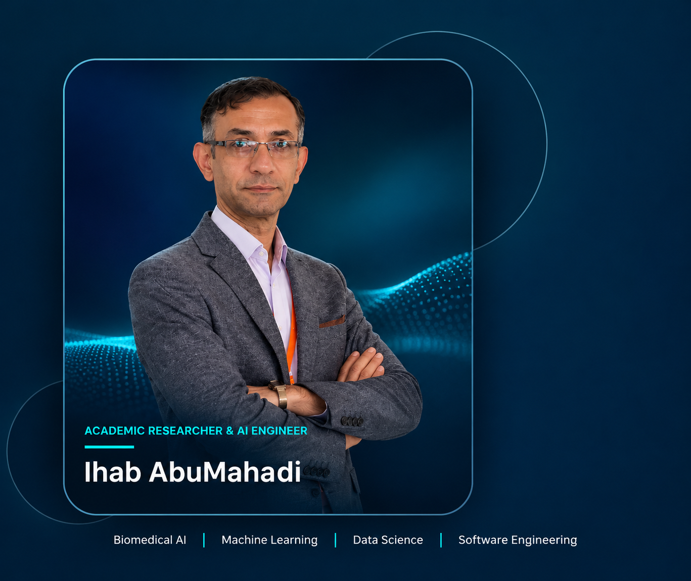

Biomedical AI & Machine Learning
Transformers, histopathology, multimodal learning, medical imaging, evaluation design and reproducible research workflows.
Multidisciplinary researcher and senior engineer with experience spanning biomedical AI, data science, business intelligence, enterprise software, databases, and technical leadership. I turn complex challenges into practical, evidence-driven solutions.

My career spans business intelligence, software delivery, data quality, and machine-learning research. I develop reliable pipelines, analyze complex data, communicate findings to stakeholders, and build database-backed applications. My research interests include trustworthy medical AI, multimodal learning, computational pathology, and longitudinal imaging.
Selected research metrics describe specific experiments—not clinical validation or production readiness.
My work combines applied research with delivery across different organizations and sectors. Explore the professional timeline below for roles and dates.
Transformers, histopathology, multimodal learning, medical imaging, evaluation design and reproducible research workflows.
Python, SQL, statistical analysis, ETL, Power BI, Tableau, dashboards, data validation and reporting automation.
C#, ASP.NET MVC, Python/Flask, REST APIs, database-backed applications, integration and workflow automation.
SQL Server, Oracle, MySQL, data modeling, T-SQL, stored procedures, indexing and query optimization.
Requirements analysis, stakeholder communication, project coordination, mentoring, Agile/Scrum and cross-functional delivery.
Connecting academic investigation with usable software, decision-support tools and practical AI-enabled solutions.
SQL/Python analysis, reporting automation, dashboards, audit data quality, and bilingual certificate verification systems.
C#, Python, backend services, APIs, relational databases, and operational software delivery.
Histopathology preprocessing and transformer-based model experimentation.
Life-sciences data validation, consistency checking, and analytical records.
ASP.NET MVC, C#, responsive web applications, SQL, and API integrations.
Software and data project leadership, archiving systems, database solutions, and reporting.
Requirements analysis, workflow improvement, specifications, and stakeholder coordination.
PyTorch, TensorFlow, transformers, computer vision, multimodal modeling, feature engineering, model evaluation.
Python, SQL, R, pandas, NumPy, scikit-learn, Power BI, Tableau, ETL, statistics, reporting automation.
C#, ASP.NET, Flask, REST APIs, HTML, CSS, JavaScript, Git, Docker, Agile/Scrum.
SQL Server, MySQL, MariaDB, PostgreSQL, Oracle, relational modeling and query optimization.
Patient-grouped evaluation, data provenance, reproducibility, survival modeling, radiomics, experimental controls.
Stakeholder requirements, technical documentation, mentoring, presentations, cross-functional delivery.
İzmir Kâtip Çelebi University · AI research focus
İzmir Institute of Technology (İYTE)
Islamic University of Gaza
Islamic University of Gaza
Islamic University of Gaza
Udacity Data Analyst Nanodegree (2024), Google Data Analytics (2021), FAIR Research Data Management (2025), Elements of AI for Business (2025), plus earlier technical training.
Open to conversations about AI research, data science, software engineering, and cross-disciplinary collaborations.
Explore my publications, projects, and professional background. For research collaborations, speaking engagements, and AI engineering opportunities, get in touch directly.
 SCAN TO VIEW MY PORTFOLIO
SCAN TO VIEW MY PORTFOLIOBring your research question, business challenge, software concept, or AI-powered idea. I welcome proposals from researchers, entrepreneurs, institutions and independent innovators.
Explore joint research, technical co-development, prototypes, analytics solutions, and institutional collaborations.
Proposals are reviewed individually; submission does not imply acceptance or a contractual commitment.
Open collaboration portal ↗